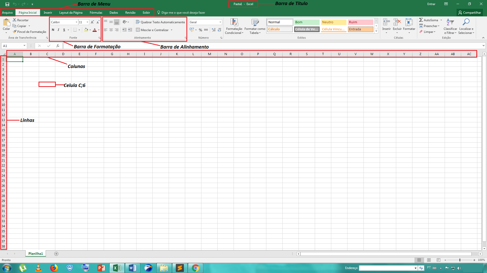

O que vamos encontrar nessa página?
Surgimento dos Computadores
A 2000 a.C o homem necessidades de meios para fazer cálculos aritméticos, e essa necessidade crescia cada dia mais. De acordo como o tempo passava o homem foi inventando instrumentos capazes de realizar cálculos matemáticos, como o ábaco criado pelos chineses. Esses instrumentos são conhecidos como calculadoras. Blaise Pascal, um francês matemático criou uma calculadora capaz de fazer cálculos de adição e subtração através de engrenagens internas que giravam de acordo com o numero posicionado. Várias outras calculadoras foram criadas todas com intuito de aperfeiçoar a suas antecessoras, e assim foi evoluindo o que chamamos de tecnologia, essa evolução foi tão abrangente que chegou a criar não apenas instrumentos de cálculos matemáticos, mas maquinas capazes de efetuar cálculos matemáticos e operações logicas, essas máquinas são conhecidas como computadores.
Primeiros Computadores
O britânico Charles Babbage foi o cientista, matemático, filósofo, engenheiro mecânico e inventor que com o mesmo objetivo de aperfeiçoar as primeiras calculadoras criou o primeiro computador conhecido como "maquina analítica", que funcionava por estruturas logicas. Devido a essa contribuição para a tecnologia mundial, hoje é chamado de "o pai do computador". Só por volta do século XX que as ideias de Charles Babbage foram sendo mais e mais aperfeiçoadas, surgiram os primeiros computadores elétricos. Na época os computadores eram usados apenas para efetuar cálculos aritméticos, mas essa realidade mudou após surgir os "computadores pessoais(PCs)" até então criados por empresas como Aple e Microsoft, com objetivo de atender as necessidades pessoais do usuário. Vários modelos de computadores pessoais surgiram e evoluíram, até os dias atuais, onde os computadores cabem em um quarto ou na mochila ou até mesmo no nosso bolço.
Hardware e Software
Um computador é formado em duas partes, "hardware" e "software". O hardware seria a parte física do computador, ou seja, são os dispositivos e peças que o compõem, como gabinete, monitor, placa-mãe, fonte de alimentação etc. O software em um computador é sua estrutura lógica, ou seja, programas que constitui sua nomenclatura logica, também podemos chamar de inteligência do computador. Exemplos de software seriam os sistemas operacionais, browsers, aplicativos etc.
Dispositivos de Entrada e Saída
Para que um computador realize suas tarefas, é preciso de todos os periféricos que o compõem. A função dos periféricos é enviar dados para o computador executá-las, em alguns casos o computador envia de volta os dados processados, por isso o nome "entrada e saída". Exemplos essenciais de periféricos de entrada e saída são, teclado, mouse e caixas de som.
Armazenamento de Dados
De acordo com a evolução dos computadores modernos, a capacidade de armazenamento dos computadores foi ficando cada vez melhor. Hoje podemos desfrutar dos HDs (hard disck) que tem alta capacidade de armazenamento. Os vários outros dispositivos de armazenamento como os Pendrives, Cartões SD, CDs, DVDs etc. A unidade de armazenamento de dados é dada em bits e seus superiores (podemos ver tabela abaixo).
| Bit | Unidade de Medida |
| Byte | 8 Bits |
| Kilobyte (Kb) | 1024 Byte |
| Megabyte (Mb) | 1024 Kilobyte |
| Gigabyte (Gb) | 1024 Megayte |
| Terabyte (Tb) | 1024 Gigayte |
Sistema Binário
O sistema binário é um sistema de numeração formado por dois números, por isso no nome "binário". A base ou os números que o compõem é apenas 0 e 1. A combinação desses números é base de um computador moderno. Apenas esses dois números é o que formam todos os softwares que conhecemos.
Pacote Office
O pacote office é um conjunto programas para escritório, como editores de texto, editores de planilhas eletrônicas, editor de apresentação e outros. Esse pacote foi criado em duas tipos um exclusivo para o sistema operacional windows chamado de Microsoft Office. O outro se chama Libre Office, que foi feito para um sistema operacional livre.
Editores de Texto
O Pacote Libre Office proporciona um programa para edição de texto chamado de Writer. Já o Pacote Microsoft Office disponibiliza do Word, um editor de texto cheio de recursos de formatação. O editor de texto Word permite ao usuário o poder de criar praticamente todos os tipos de texto.
Interface
A interface do Word é basicamente feita por uma barra de título, barra de menu, barra de ferramentas de formatação régua horizontal, régua vertical, a folha do texto e barra de status (veja a imagem abaixo).

Componentes
Barra de título informa o nome do documento e o tipo de documento. A barra de menu disponibiliza diversos recursos para formatação da folha, como definir o layout, inserir imagens, design da folha e outros. Barra de ferramentas de formatação, define e design do texto, como, defini-lo em negrito, itálico, tachado, sublinhando, sobre ponto e outros. Barra de status informa a situação atual do texto.
Editores de Planilhas Eletrônicas
É um programa que utiliza tabelas para realização cálculos ou de apresentação de dados. Sua interface é formada por um corpo feito de linhas e colunas dando o sentido de umas tabelas, cada partição da tabela é chamada de célula. Esse programa nos proporciona fazer cálculos matemáticos e lógicos de forma automática. As células onde colocamos o conteúdo é marcada em um endereço, parecido com o do plano cartesiano, onde as letras representam as colunas e os números representam os alinhas. Como o Word, o Excel também disponibiliza de vários recursos para formatação de texto. Podemos ver sua interface logo abaixo.
